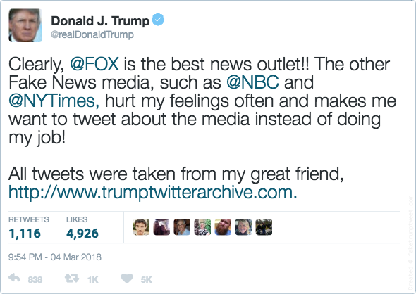

TWEETS CONTAINING CONTENT ABOUT MEDIA
media mentioned approx. 17% consistently
MENTIONED NEWS OUTLETS OVER TIME
% cumulative mentions per news outlets in media-related tweets
HOW FAKE IS THE NEWS THIS MONTH?
% media-related tweets mentioning "fake news"
TRUMP'S FAKEST MEDIA
% tweets per news outlet associated with "fake news"
